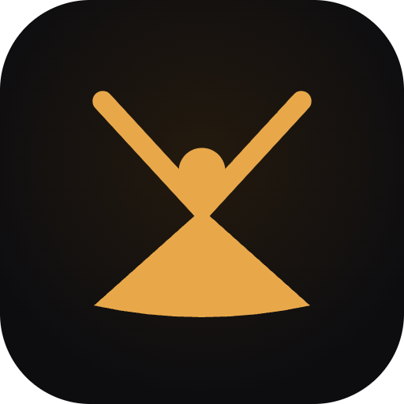

Vedyn Apps · Final Logo
A figure seated in lotus, arms raised into the V — stillness and victory in one gesture. Calm, human, unmistakably Vedyn. This is the primary mark across product, web, and store.
Horizontal lockup — nav, headers, email signatures
Stacked lockup — splash, about, profile avatars

Squircle app icon — amber mark on warm-dark with a soft glow
Browser tab — silhouette stays legible down to 16px
Amber on dark — default
Ink on cream — print, light UI
Dark on amber — reversed / accent
One nodal point — arms (V) rise and legs spread from a single seat at the figure's center
Clear space — keep min. padding equal to the head's diameter on all sides
Use the single-color mark on solid brand backgrounds. Let the amber carry the warmth.
Keep the figure's proportions locked — scale uniformly, never stretch one axis.
Give it room. Honour the clear space so the V stays open and readable.
Don't add gradients, bevels, or drop shadows to the flat mark (the glow lives only in the app icon).
Don't recolor outside the palette or place amber-on-amber with low contrast.
Don't rotate the figure or detach the arms from the seated base.
Held in reserve for moments that call for the mission's harder edge — security pages, the privacy manifesto, sticker drops. A vigilant face that looks back, never collects. Files are included alongside the primary mark.